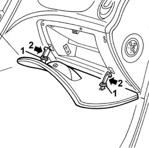
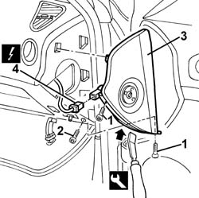

7040A45 facia rh side cover - r r
- Path
- Procedures > 70 FITTINGS > 7040 BODYSHELL INTERIOR TRIMS AND FITTINGS > 7040A passenger compartment trim > 7040A45 facia rh side cover - r r
- Kind
- repair procedure (removal / refitting; the operation number is the code)
- Applies to
- all engines; all production periods
- Interactive page
- https://sloeber94.github.io/elrnDB-a156/en/#/3238801
Applies to: all engines; all production periods
Applies to: all engines; all production periods
 Removing
Removing
 Refitting
Refitting1. Remove the flap rod sliding trims.
2. Press the flap rods inwards, release them from the retainers and extract them.

Applies to: all engines; all production periods
1. Undo the bolts securing the side trim.
2. Undo the bolt.
3. Remove the trim from the retainers using the appropriate tool.
 | Name | Country |
|---|---|---|
3 | Scraper blade | 1.823.014.000 |
4. Disconnect the electrical connection for the Air Bag switch and save the cover.
 | Name | Connector |
|---|---|---|
4 | Passenger's Air Bag disablement switch |

Applies to: all engines; all production periods
Refitting
RemovingCheck that the trim is undamaged.
Connect the electrical connection for the switch (if fitted).
Fit the cover on the retainers.
Tighten the screws.
Insert the flap rods in the housings.
Fit the rod sliding trims.
Check the operation of the Air Bag system using the Examiner or other diagnostic equipment.
Topics linked from this page (1)
Topics that link to this page (15)
- 3330B42 pedal unit mount - r rfor right hand drive versions
- 5020A10 heater box - r+r
- 5020L10 additional heater system boiler - r r
- 5040B30 expansion valve (tube orifice) - r+r
- 5040C10 air conditioner box - r+r
- 5040C50 air conditioner heater radiator - r+r
- 5040D52 air inlet and recirculation flap actuator - r r
- 5040D76 air contitioner distribution flap control motor - r r
- 5040D84 air conditioner left hand air mixer flap control motor - r r
- 5040D86 air conditioner right hand air mixer flap control motor - r r
- 5040D90 air conditioner system wiring bundle - r r
- 5570T14 mobile phone hands-free system microphone - r r
- 7040A10 instrument facia trim - r+r
- 7040A97 facia trim support beam - r r
- 7040G24 switch for facia compartment light - r+r